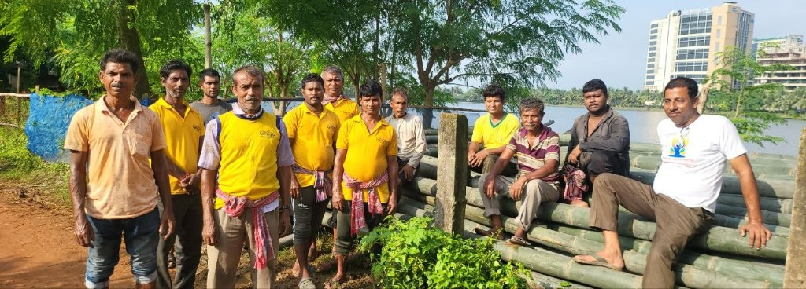
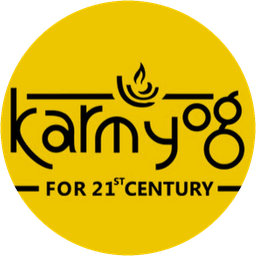

For corporate sponsors
A sponsorship conversation. Not a four-day booking.
This page is for corporate sponsors of Bharatiya Krishak Samaj Pujo. The ask is a conversation, not a payment.
Why this is different
Most festival sponsorship is inventory: a few nights, a hoarding, a logo on a pandal. This briefing is not that rate card.
Bharatiya Krishak Samaj Pujo places the farmer and Integrated Farming inside Durga Puja, when Bengal is outdoors together. The intended setting is decision-makers and the public in one living week. That setting is intended. It is not a guaranteed attendance, media, or return figure.
The next step is a conversation about entering a named platform. Nothing on this page takes money.
Puja, decision-makers, and the public
- The civic week
- Bharatiya Krishak Samaj Pujo. Civic dates 16-20 October 2026, Kolkata. Venue to be announced.
- Who is intended to gather
- Corporate decision-makers and the public, in one living week. Intended, not a guaranteed footfall.
- What sits at the centre
- The farmer is named. Integrated Farming is shown as a livelihood, not as a slogan.
Not just four days
The civic dates are four days. The page positions a seasonal platform meant to continue. Later-year programmes are not published here.
“Season 1 of a three-year movement” is pending confirmation as locked public language. Do not read Year 2 or Year 3 programmes into this page. They are not published.
On this page
- Event name: Bharatiya Krishak Samaj Pujo
- Organised by KarmYog for the 21st Century
- Organising partner: Bharatiya Krishak Samaj
- Civic dates: 16-20 October 2026, Kolkata
- Venue: to be announced
- No payment on this website
Pending confirmation
- Title sponsorship status
- Season 1 / three-year wording as a locked slogan
Proposed, target, assumed
- About 5,000 farms or patrons: target
- ₹1 lakh seed: proposed, not collected here
- Title package ₹10 lakh: assumed
- Category package ₹2.5 lakh: assumed
A continuing place, not a four-day set
These frames are empty until photographs are approved. They sketch an intended sequence. They are not evidence of a finished farm.

- Before PENDING photographs
- Access PENDING photographs
- Build PENDING photographs
- Progress PENDING photographs
- Farm PENDING photographs
- Future PENDING photographs
Organising partner

Organised by KarmYog for the 21st CenturyBharatiya Krishak Samaj is the organising partner of this Pujo. It is not the title sponsor. The title-sponsor slot is not occupied by Bharatiya Krishak Samaj.
Bharatiya Krishak Samaj, West Bengal
F 127, Downtown Mall, Uniworld City, New Town, Kolkata 700 156
Title sponsorship opportunity
Pending confirmation
No title sponsor is appointed on this page. Public status remains pending confirmation.
Package amounts below are assumed. They are not a confirmed rate card.
- Title
- ₹10 lakh ASSUMED
- Category
- ₹2.5 lakh ASSUMED
Questions a board will ask
What is the opportunity?
This page is a briefing for organisations that may wish to sponsor Bharatiya Krishak Samaj Pujo. The next step is a conversation. Title sponsorship status is pending confirmation.
Who is this for?
Corporate and organisational sponsors, and partnership leads considering a conversation. This is not a public booking page and not a payment page.
Why a Puja?
Durga Puja is when Bengal is outdoors together. This Pujo names the farmer and places Integrated Farming inside that civic week. Civic dates are 16-20 October 2026, Kolkata. Venue to be announced.
How is this different from a usual festival buy?
The intended setting is decision-makers and the public in one living week, with the farmer and Integrated Farming at the centre. No audience, media, or return is guaranteed.
Is this only four days?
The civic dates are four days. The page positions a seasonal platform meant to continue. Later-year programmes are not published here.
What does Season 1 mean?
“Season 1 of a three-year movement” is pending confirmation as locked public language. Year 2 and Year 3 programmes are not published.
What is confirmed, and what is only proposed?
Confirmed here: the event name, organiser, organising partner, civic dates, Kolkata, venue to be announced, title status pending confirmation, and that this website takes no payment. Proposed: ₹1 lakh seed, not collected here. Target: about 5,000 farms or patrons. Assumed: Title ₹10 lakh and Category ₹2.5 lakh.
What does expressing interest actually do?
The form downloads a file named bks-pujo-sponsor-enquiry.json to your device. This website does not send the file to Bharatiya Krishak Samaj. You may send that file yourself, outside this website, if you wish to continue.
Does this page take payment?
No. Nothing on this page takes money. There is no checkout and no booking.
What is Bharatiya Krishak Samaj’s role?
Organising partner. Bharatiya Krishak Samaj does not occupy the title-sponsor slot.
What is KarmYog’s role?
Bharatiya Krishak Samaj Pujo is organised by KarmYog for the 21st Century.
What is the title sponsor status?
Pending confirmation. No title sponsor is appointed on this page. Bharatiya Krishak Samaj is not the title sponsor.
Express Sponsor Interest
This form does not submit to a server. On send, your browser downloads bks-pujo-sponsor-enquiry.json to this device. Bharatiya Krishak Samaj does not receive the file automatically. You may email that file to contact@bkswbengal.org if you wish to continue. Nothing here takes money.